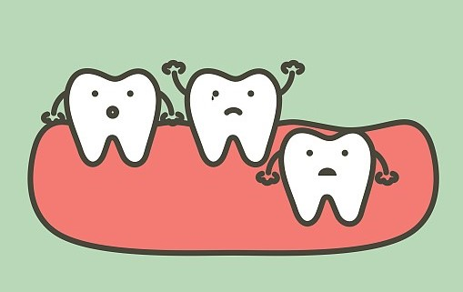

智齿拔除的其他小贴士（Other Tips）
智齿拔除要缝针吗？(Do I need stitches after removal?)
- 需要根据智齿的具体情况判断。 (It DEPENDS)。
如果智齿完全长出来，医生的视野也比较好，一般不需要切开牙龈，也就不需要缝针。
如果智齿没有完全长出来，或视野不利于拔除，医生可能会切开牙龈，就需要缝针。

智齿拔除后可以瘦脸吗？(Will removing wisdom teeth make my face thinner?)
- 不可以 (NO)。
脸的大小主要由颌骨、附着在颌骨上的肌肉以及外层脂肪决定，拔不拔除对脸型无明显影响。
对脸型的修饰可以优先通过妆容、发型进行调整，轻易不要考虑手术或者其他创伤性的方式！要自信啊：）